Games
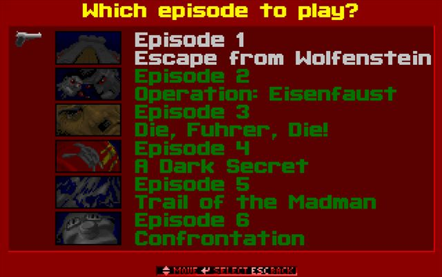
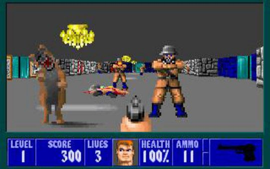
Wolfenstein 3D Shareware
Episode 1, Escape from Wolfenstein, the free 1992 shareware release from id Software. Play it in your browser through DOSBox on the Internet Archive.
Play free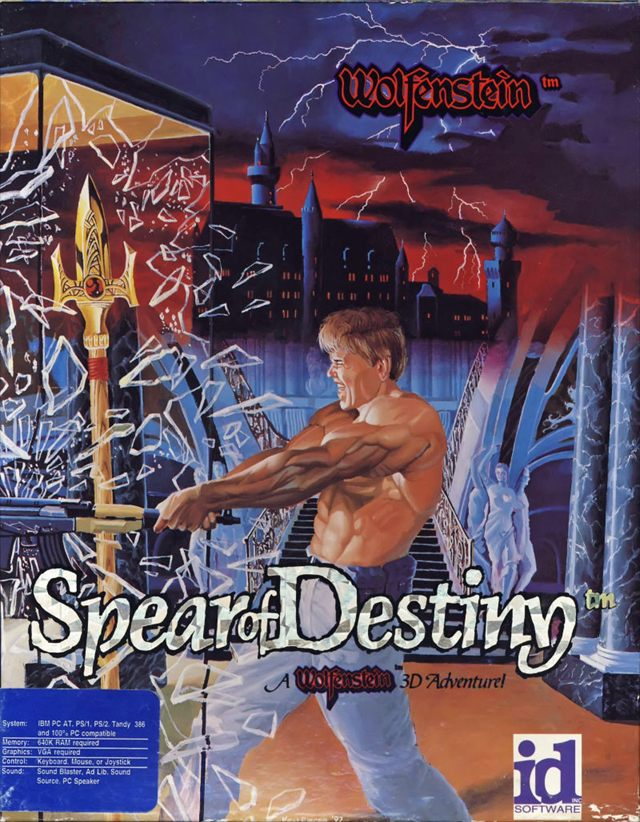
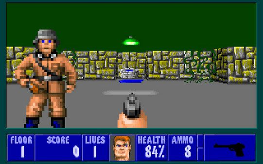
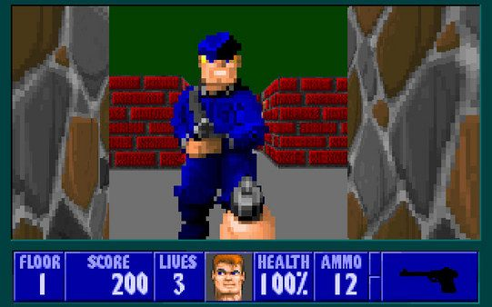
Spear of Destiny Demo
The shareware demo of the 1992 prequel. Fight through the opening floors of the castle on the hunt for the Spear, playable in your browser.
Play free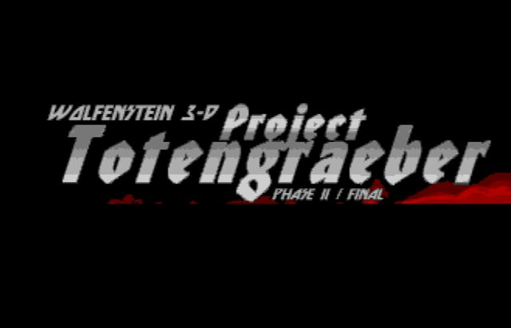
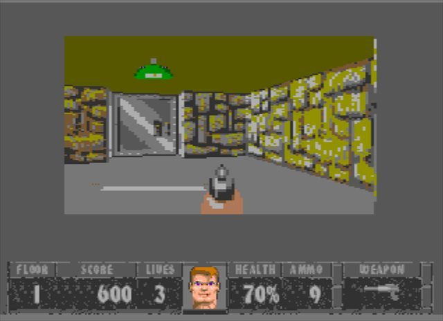
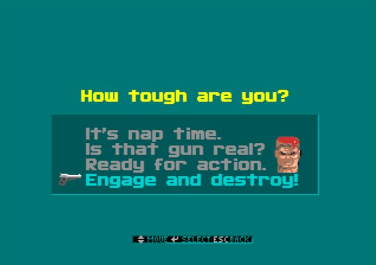
Project Totengräber (Sega Genesis)
BJ Rowan's total conversion on the Genesis / Mega Drive, ported by serpentchain. Over 40 interconnected levels across six German castles and secret bunkers, against Dr. Schabbs and his undead army.
Download ROM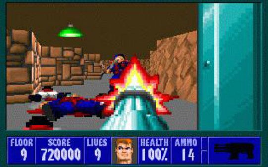
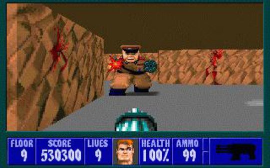
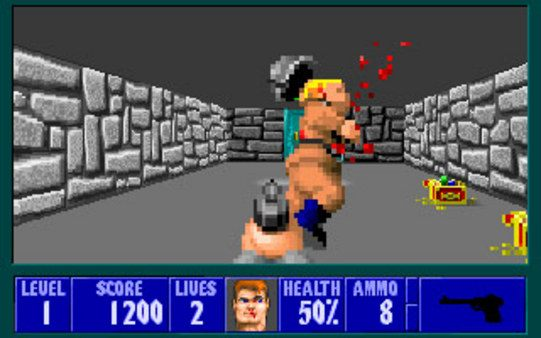
Wolfenstein 3D (Retail)
The complete game: all six episodes and 60 floors, from the escape out of Castle Wolfenstein to the final showdown in the bunker.
Buy on Steam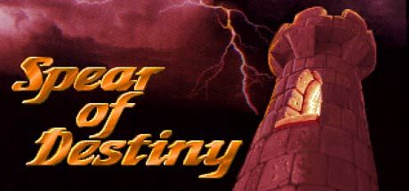
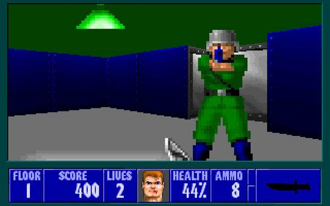
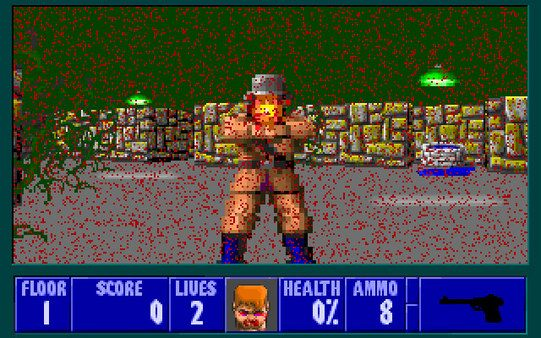
Spear of Destiny (Retail)
The full prequel campaign. It's no longer sold on Steam, but GOG includes it in the Wolfenstein 3D package, DRM-free.
Buy on GOG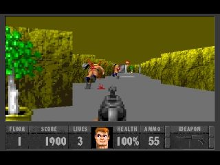
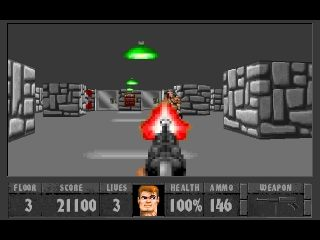
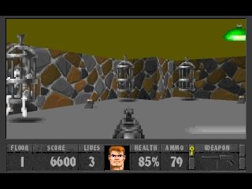
Project Totengräber (DOS)
The original DOS release of BJ Rowan's Wolfenstein 3D total conversion. Read about its levels, enemies and history on the Wolfenstein wiki.
Read more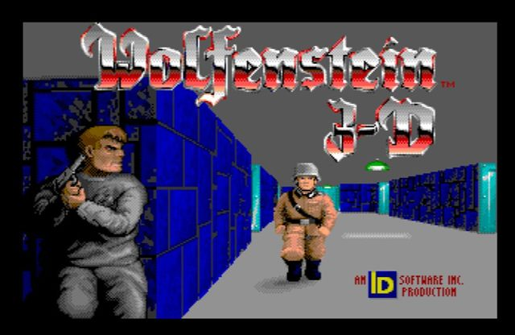
Wolfenstein 3D Megadrive Full Episode Unlocker
A Windows utility that builds the full 60-floor Sega Mega Drive ROM from the map files of your own registered copy of Wolfenstein 3D (v1.4).
Download tool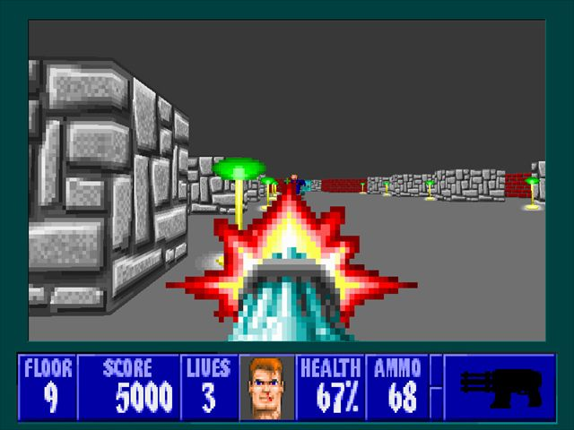
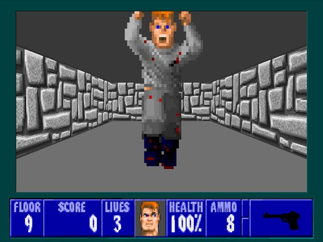
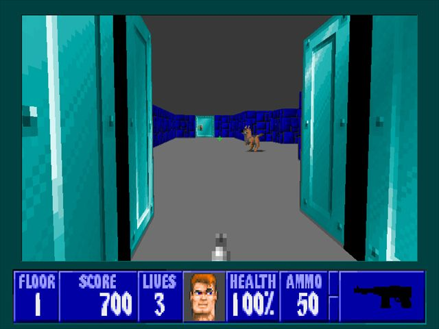
Wolfenstein 3D Total Conversion (DOOM)
AFADoomer's rebuild of Wolfenstein 3D on the Doom engine. Version 3.1 is available, with source on GitHub.
Visit site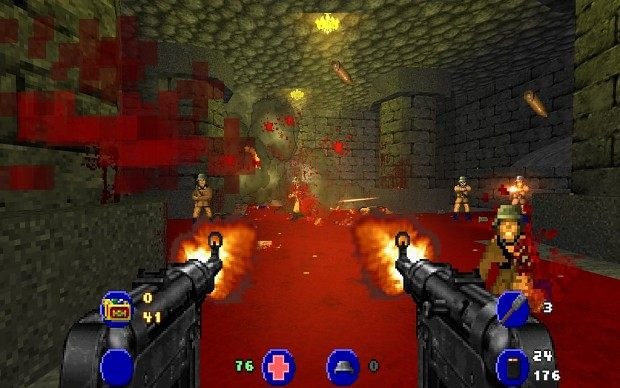
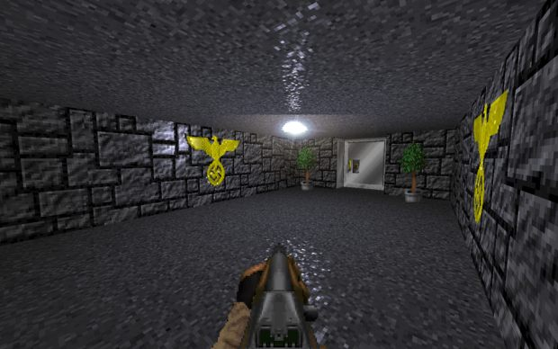
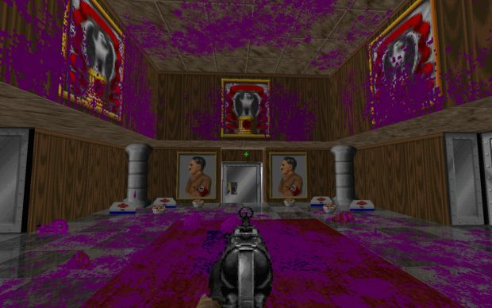
Brutal Wolfenstein 3D
Sergeant_Mark_IV's remake of Wolfenstein 3D for GZDoom, from the creator of Brutal Doom. Classic floors with updated graphics and gunplay, and a lot more gore.
Get it on ModDB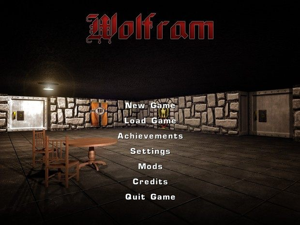
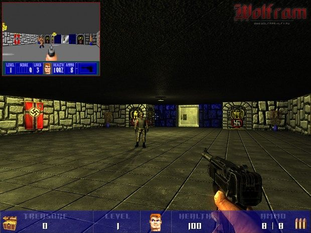
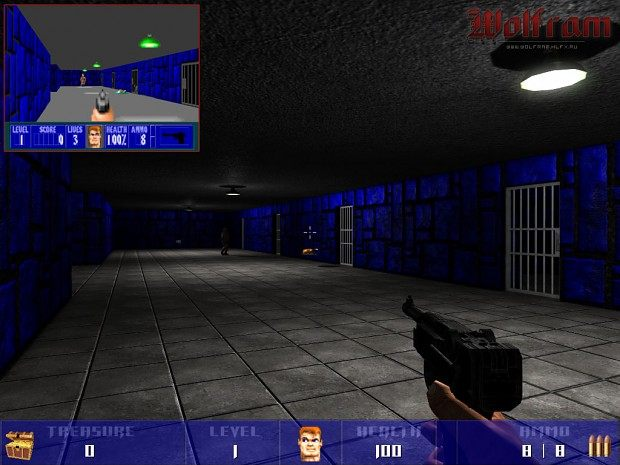
Wolfram
Chain Studios' free, standalone remake of Episode 1, Escape from Wolfenstein, rebuilt from scratch with per-pixel lighting, shadows and ragdoll physics. No original game files needed.
Get it on ModDB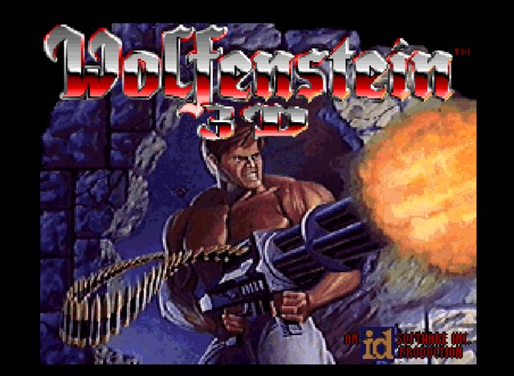
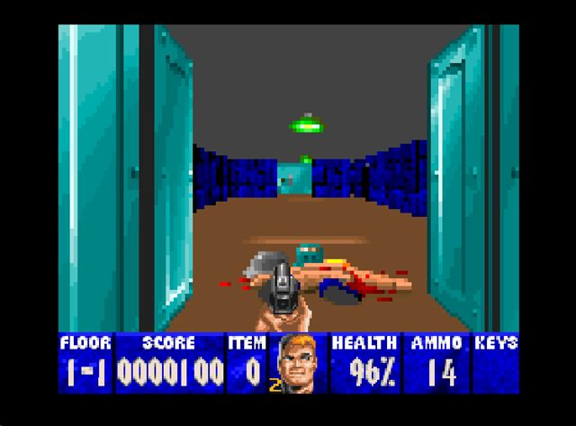
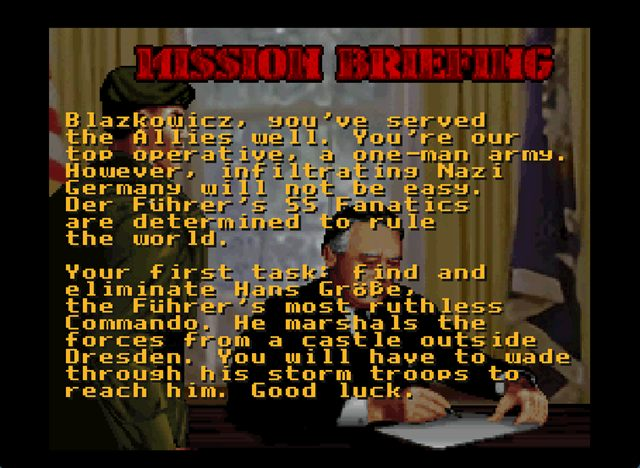
Wolfenstein 3D Uncut/Redux (SNES)
GODModeProductions' patch for the SNES version: fully uncut, SA-1 and MSU-1 support, a new Redux episode starring Gretel Grosse, every Wolf3D and Spear boss and a Boss Rush mode. Needs your own retail ROM.
Get the patch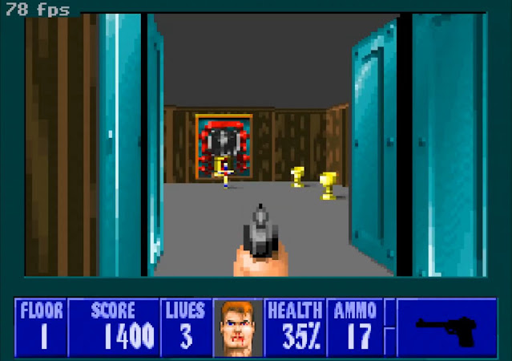
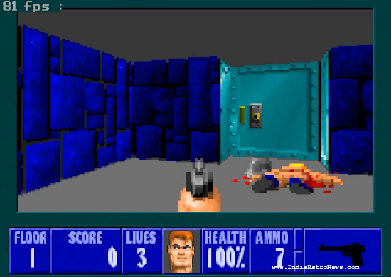
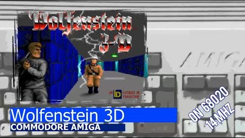
Wolfenstein 3D (Amiga)
Szilard Biro's free port of the full game to AGA Amigas like the A1200. Runs on a stock 68020 with 1 MB of Fast RAM, with CD32 pad support and an automap. Needs the registered 6-episode data files.
Get it on Aminet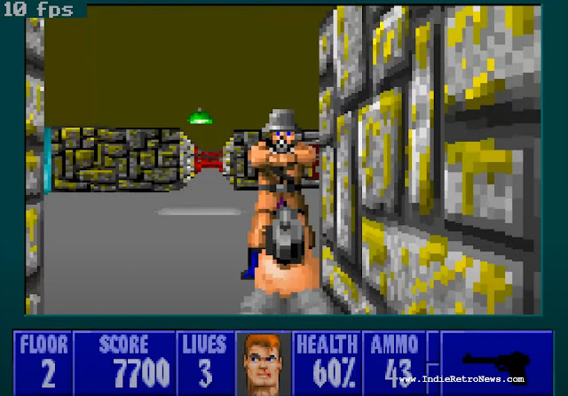
Spear of Destiny (Amiga)
The companion port of Spear of Destiny for AGA Amigas, with the same 68020 and 1 MB Fast RAM requirements. Works with every registered version of the game's data files.
Get it on AminetPages
Wolfenstein 3D Wiki
The community wiki for Wolf3D, its mods and modders, and other games on the same engine, with a growing catalogue of PC mods and guides to the wider Wolf3D community.
Read the wiki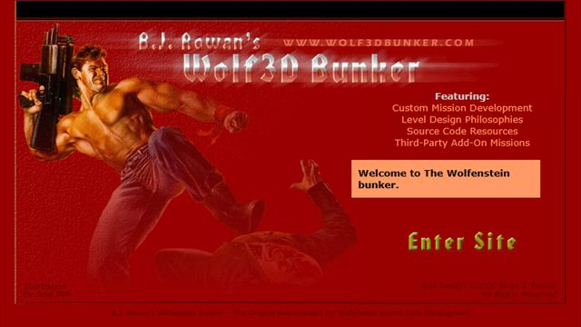
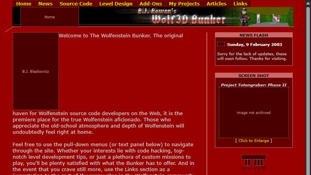
Wolf3dBunker (Archive)
B.J. Rowan's original Wolf3D Bunker, offline for over 20 years and rebuilt from the Wayback Machine. Source code tutorials, level design tips, add-on reviews and the original Project Totengräber downloads. There was a version of the site before this entirely lost to time.
Enter the bunker
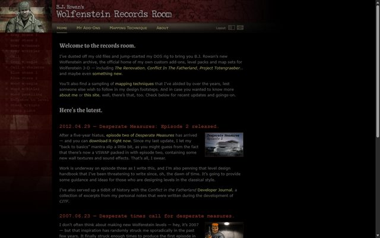
B.J. Rowan's Wolfenstein Records Room
B.J. Rowan's own site since 2007, and the official home of his add-ons: The Renovation, Conflict in the Fatherland, Project Totengräber and Desperate Measures. Also has his level design tips.
Visit site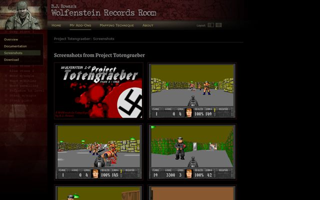
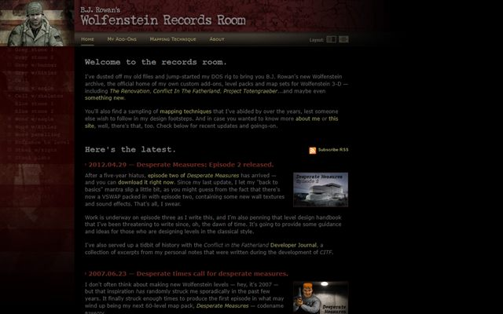
Wolfenstein Records Room (Archive)
Mirror copy of B.J. Rowan's Records Room for preservation. The site seems like it is in danger of disappearing.
Enter the archiveThe Wolfenstein 3D Dome
Brian Lowe's classic fan site: the story, enemies and walkthroughs, tutorials on editing code, graphics, sound and levels, and a huge reviewed add-on library. No longer updated, but still online.
Visit siteThe Wolf Front
The successor to the Wolfenstein 3D Dome: Wolf3D community news curated by Thomas Weiling, game insights, custom missions and mods, coding and graphics tutorials, and links to over a hundred fan sites.
Visit siteAReyeP & MCS' Add Ons
AReyeP (Australia) and MCS (Amsterdam) share their own add-ons, including Spear Resurrection and Spear End of Destiny, plus the Wolfenstein 3D Texture Library and MCS' coding tips.
Visit siteThe Wolfenstein 3D Vault
The biggest collection of Wolf3D mods, with more than 1,800 to download, plus utilities, resources and community news. Barry Christian's Vault, now hosted by AReyeP.
Browse modsDieHard Wolfers
The long-running Wolfenstein 3D fan community forum: modding help, add-on releases and the Map of the Month Club. B.J. Rowan pointed to its DieHard Wolfenstein Bunker as the successor to his own.
Join the forum